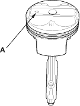
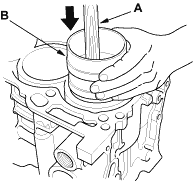
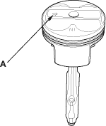
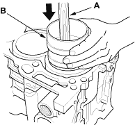

If the crankshaft is already installed
- Set the crankshaft to BDC for each cylinder.
- Remove the connecting rod caps, then install the ring compressor, and check that the bearing is securely in place.
- Position the arrow (A) facing the timing chain side of the engine.

- Position the piston in the cylinder, and tap it in using the wooden handle of a hammer (A).
Maintain downward force on the ring compressor (B) to prevent the rings from expanding before entering the cylinder bore.

- Stop after the ring compressor pops free, and check the connecting rod-to-crank journal alignment before pushing the piston into place.
- Check the connecting rod bearing clearance with plastigage (see page 7-9).
- Inspect the connecting rod bolts (see page 7-25).
- Apply engine oil to the bolt threads, then install the rod caps with bearings. Torque the bolts to 29 Nm (3.0 kgf/m, 22 lbf/ft).
- Tighten the connecting rod bolts an additional 90
°.

If the crankshaft is not installed
- Remove the connecting rod caps, then install the ring compressor, and check that the bearing is securely in place.
- Position the arrow (A) facing the timing chain side of the engine.

- Position the piston in the cylinder, and tap it in using the wooden handle of a hammer (A).
Maintain downward force on the ring compressor (B) to prevent the rings from expanding before entering the cylinder bore.

- Position all pistons at top dead centre.